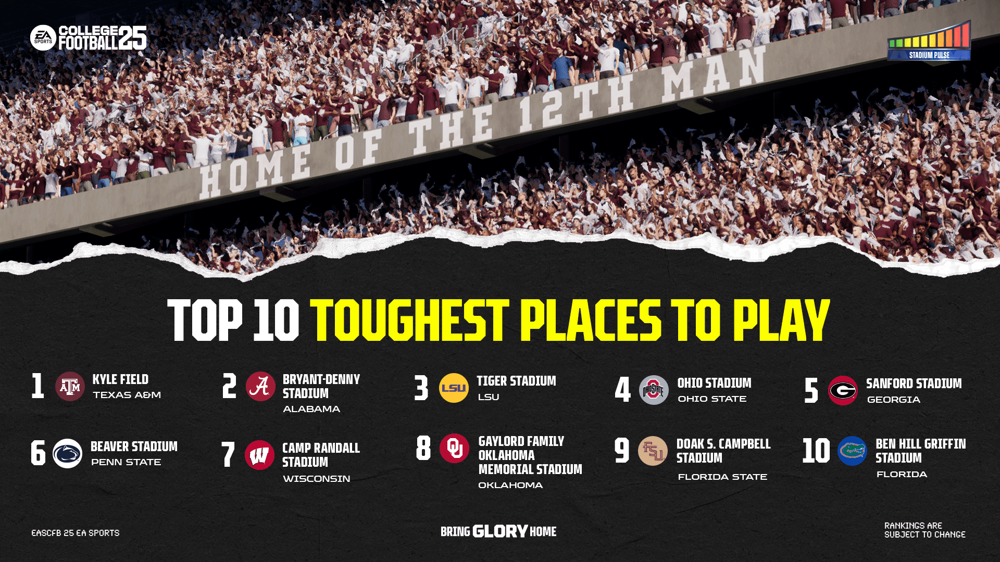
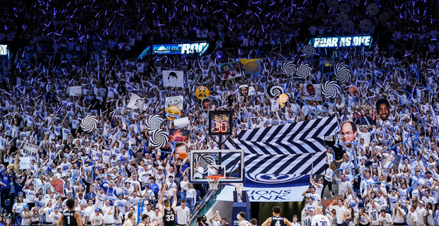
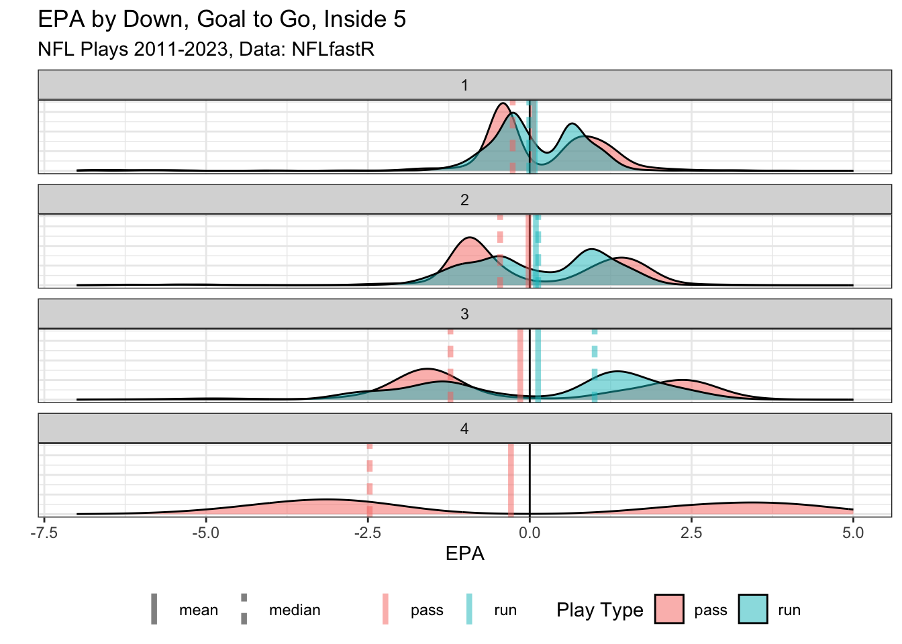

2024
Who has the Biggest Home-Field Advantage? It's Not Who You Think.
college football
home field advantage
football
sports analytics
EPA
Why EA Sports new college football game's home field advantage rankings are not backed by data.

Can A College Crowd Affect Free Throws?
college
basketball
bayesian
free throws
sports analytics
Analyzing if college student sections have a measurable impact on opposing team's free throw percentage.

Slow Down Using EPA for Everything
football
sports analytics
EPA
Is using EPA always the best metric of choice? Occam's razor would suggest sometimes its best to stick with simpler measurements such as yards.

No matching items